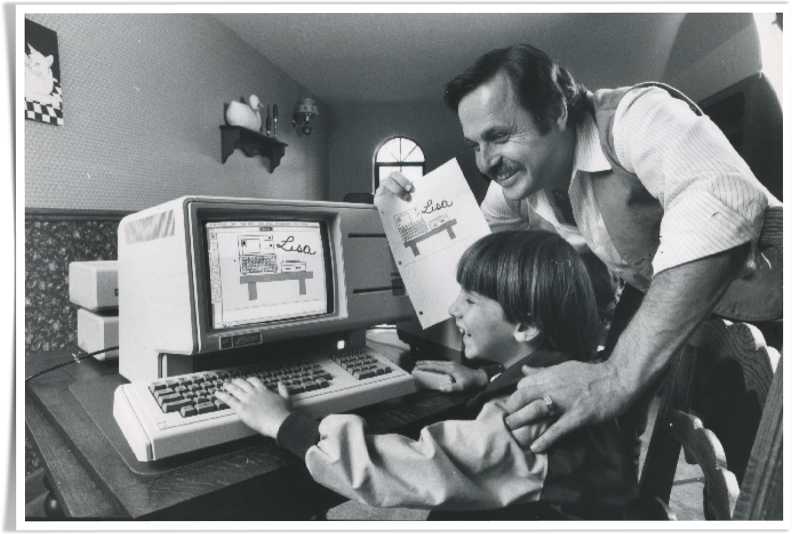

The early phases of Mac's development started at a time where technological ambition was through the roof. The '80s didn't enjoy seeing a new wave in music, but also in computing, and it all started in 1977 with the Apple II. Although not technically the first of its kind, it was unique and revolutionary enough to be widely considered the very first personal computer to become popular. Not only was the Apple II now at the top of the computing world, but it was also Apple's entry to the big leagues, and it sparked a movement for personal computers as a legitimate, profitable market. Several big companies now wanted in to create the next big personal computer, and not too long after, someone did. In 1981, a company that had only been growing bigger since the end of World War II enters the picture here enters the IBM PC, a machine very easy to use in comparison to everything else that was available. It would become the first PC to dominate the Apple II sales, and it only took them a few months. Apple might have been riding the wave of the Apple II for quite some time, but technology was changing quickly, and this was a wake-up call.
The Apple II was already four years old, and small upgrades wasn't going to be enough. The company was no longer number one, and they had to act fast before they fell even further. Apple had to innovate once again. The IBM's launch marked a second wave in personal computing. Steve Jobs was determined to create the third industry standard machine. Priority was now placed on a project Apple had been working on for a few years, the Apple Lisa. This was going to be the computer that changed everything, because it surrounded a brilliant concept. What if you could get everything done with just the click of a button? Of course, we are talking about the mouse and the desktop environment, also known as the GUI. Knowing all these sophisticated commands was no longer necessary to operate a computer. You could just click what you want, and type what you want.
Jobs wanted to use that with the Lisa so everyday businesses could get tons of work done without having to spend months on learning code and reading manuals. The concept was brilliant, but during its production, it wouldn't take long for business politics to enter the picture.

Jobs was very difficult to work with when creating the Lisa, so much so that he was kicked from the project. Disagreement over how the computer should be designed, and how it should be priced led to a very Game of Thrones maneuver. Steve Jobs would lead his own project and recruit his own employees to help him create the computer he wanted to make, essentially competing with the Lisa on who could make the better machine. Jobs resurrected a dormant Apple project called the Macintosh, a project created in 1979 by Apple co-founder Steve Wozniak, and employee Jef Raskin. The name came from Raskin's favourite fruit, a Macintosh Apple, and he and Wozniak had the vision of making a computer that was cheap, simple, and aimed at the everyday person. This would be the perfect competitor for the Lisa. The big selling point for the Lisa was its easy-to-use desktop environment, but what if you could make it even easier, so easy that anyone could use it, including your 85-year-old grandmother, a computer that would come with its own games, word processor, graphics editor, other programs provided by Microsoft, and it could even talk to you? Steve Jobs took the boldest marketing risk you could possibly make, and made his target audience everyone, trying to solve everyone's problems, while also solving problems people didn't even know existed yet.
The Macintosh was born, and Jobs made it very clear that this would be the third industry standard for computing. – “Today, one year after Lisa, we are introducing the third industry milestone product, Macintosh.” - Completely disregarding the new Commodore 64, which had just become the highest selling computer of all time, with its GUI and mouse, the Macintosh would triumph everything else. Lisa proved to be a giant failure at its launch. With its slow speeds, poor design, and a market price of $10,000, no one wanted to buy it. This only gave Jobs a bigger advantage, because the Macintosh would do everything that Lisa could, but cheaper, and more efficient. People were excited about this new machine. Jobs was so determined on taking down IBM's monopoly that nothing else mattered, including how practical the Macintosh was, and this would be deeply reflected in the product itself. The Mac's launch did anything but exceed expectations. The media was projecting sales that had never been seen before in the history of computers, and at the start, that is what they got. But when the machine finally had an enough time to truly reveal itself, the rose-tinted glasses came off, and things took a sharp turn. With how development went, it's easy to see in hindsight that the Macintosh was none other than a deeply flawed machine. The headstrong leadership from Steve Jobs created a product with an overconfident design, slightly misleading marketing campaign, high cost, and lack of a real-world practical use.
So, in the end the macintosh proved to be a sales failure. It was both ahead of its time, and behind it. But it transmitted its message and Steve’s vision for the future that computers could not be confusing anymore if they wanted to get more powerful. The only way to maximize their capabilities is by maximizing their audience to appeal to all kinds of people who can share all kinds of perspectives, ideas, new information, to be continuously innovative and forward-thinking, to be Macintosh, the computer for the rest of us. And only a few years later proof that the macintosh had made its job was on the release of Windows in 1985.